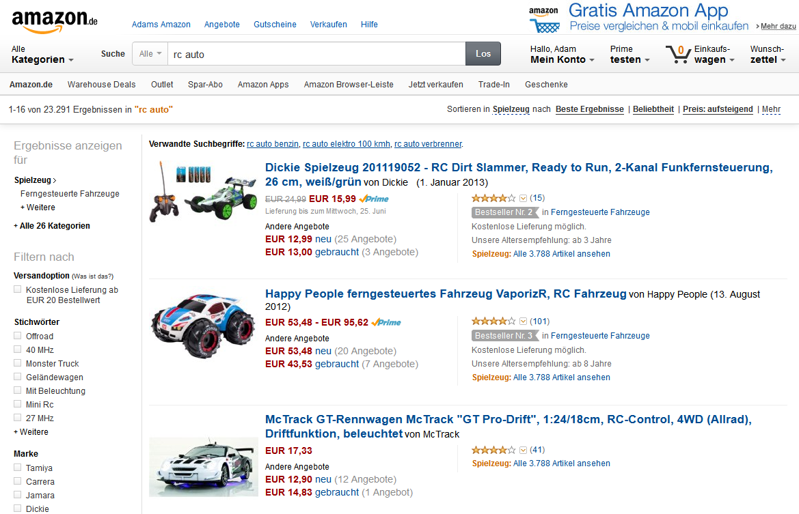

## Bevor wir starten...
* bitte Node.js installieren - [nodejs.org](http://nodejs.org/)
* ggf. den Rechner neustarten
* bitte ausprobieren, ob alles funktioniert
```
> node -v
v0.10.28
> npm -v
1.4.9
```
## Lokaler Webserver
* um die Codebeispiele auszuprobieren, jeder sollte am Besten einen lokalen Webserver am Laufen haben
* ich empfehle serve (`npm install -g serve`)
## Modularisierung
* Warum sollte man modularisieren?
* Was ist eine Module?
* Module Pattern
* PubSub Pattern
## RequireJS
* AMD - Asynchronous Module Definition
* Was ist RequireJS?
* Plugins
* Performance
* Optimizer
* Testing
## Browserify
* CommonJS Module
* Was ist Browserify?
* Benutzung
* Transformationen
* GruntJS Integration

Welche clientseitige Module gibt es in einem Webshop?
* Navigation, Menüs
* Produktfilter
* Sortieren
* Suche
* Warenkorb
* Merkzettel, Wunschzettel
* Produktliste - dynamisches Laden
* Werbung
* Tracking
* Templating
* Frameworks
* ...
Eine Module
- ein Stück Code
- ist eine wertvolle Einheit
- kann andere Module verwenden (dependency)
- macht eine Sache
- ist möglicherweise klein
## Global namespace pollution
```JavaScript
var myVariable = 1234;
function myFunction() {
// do something
}
```
## So ist alles sauber
```JavaScript
(function() {
// Immediately-Invoked Function Expression
// No global namespace pollution
var myVariable = 1234;
function myFunction() {
// do something
}
}());
```
## Module Pattern
```JavaScript
var module = function() {
var privateVariable = 42;
function privateFunction() { return privateVariable; }
return {
addTo42: function(x) {
var sum = x + privateFunction();
console.log(sum);
return sum;
}
};
}();
module.addTo42(7); // 49
```
## Revealing Module Pattern
```JavaScript
var module = (function() {
function doSomePrivateThing() {};
function doThisPublicThing() {
doSomePrivateThing();
}
return {
doThisPublicThing: doThisPublicThing
};
}());
```
## 0. Übung - Schreiben wir einen Zähler!
```JavaScript
var counter = (function() {
}());
/*
Public API:
* module.inc()
* module.dec()
* module.reset()
* module.getValue()
*/
```
## 1. Übung - Wir brauchen einen Parser
```JavaScript
var parser = TODO;
...
parser.parseNumber(1); // 1
parser.parseNumber(1.2345); // 1.2345
parser.parseNumber(6); // 6
parser.parseNumber('five'); // 5
```
## PubSub Pattern - a.k.a. Event Aggregator
## 2. Übung - Delta anzeigen
```JavaScript
PubSub.publish(channel, payload);
PubSub.subscribe(channel, function(payload) {});
PubSub.subscribe('userLoggedIn', function(user) {
alert('Hello ' + user.firstName);
});
// later...
PubSub.publish('userLoggedIn', {
firstName: 'Jane', lastName: 'Doe'
});
```
## Global Namespace Pollution
zu viele globale Variable
```JavaScript
var parser = ...
var counter = ...
var ui = ...
var delta = ...
```
## 3. Übung - Unsere App kriegt einen eigenen Namespace
```JavaScript
namespace('mycompany.myapp');
mycompany.myapp.parser = ...
mycompany.myapp.counter = ...
```
## AMD - Asynchronous Module Definition
```JavaScript
define(['dependency1', 'dependency2'], function(dependency1, dependency2) {
// do something with dependencies
});
```
## Alternative Syntax
```JavaScript
define(function (require) {
var dependency1 = require('dependency1'),
dependency2 = require('dependency2');
return ...;
});
```
## 4. Übung - AMD und RequireJS einführen
```JavaScript
define(['dependency1', 'dependency2'], function(dependency1, dependency2) {
// do something with dependencies
});
```
## 5. Übung - Wir wollen auch HTML mitliefern
## Performance
* \+ nur der wirklich nötige Code wird geladen
* \- sehr viele Requests (Anzahl der Module + 1)
* \- die einzelne Dateien sind per default nicht minifiziert
## 6. Übung - Optimizer ausprobieren
```
cd path/to/exercies/6
npm install
npm run build
```
## 7. Übung - Einige Tests schreiben
Im Browser öffen: http://localhost:3000/exercises/7/js/tests/SpecRunner.html
```JavaScript
describe('test description', function() {
var myModule;
beforeEach(function(done) {
require('module', function(module) {
myModule = module;
});
});
it('should work', function() {
expect(myModule).toBeDefined();
});
});
```
## Browserify
* Compiler für Node-style CommmonJS Module
* Ermöglicht `require()` Aufrufe im Browser (wie in Node)
* Viele Node-Module können verwendet werden
## CommonJS Module
```JavaScript
var mymodule = require('mymodule'); // mymodule wird synchron geladen
var other = require('./otherModule');
var Constructor = require('./aConstructorModule');
var x = new Constructor();
```
```JavaScript
// otherModule.js
module.exports = {
doSomething: function() {},
variable: 5
};
```
Grundlagen
Installieren
npm install -g browserify
Generieren
browserify main.js -o bundle.js
Einbetten
<script src="bundle.js"></script>
## Beispiel
```
npm install uniq
```
```JavaScript
var uniq = require('uniq');
var data = [1, 2, 2, 3, 4, 5, 5, 5, 6];
console.log(unique(data));
```
## Beispiel
add.js:
```JavaScript
module.exports = function(a, b) {
return a + b;
};
```
index.js:
```JavaScript
var add = require('./add');
console.log(add(3, 4)); // 7
```
## 8. Übung - Ausprobieren
```
cd path/to/exercises/8
npm install
npm run build
```
## Transforms
* Browserify unterstützt viele Transformationen
* Optimization (uglifyify)
* brfs (include text files)
* coffeeify (Coffee Script)
* hbsfy (Handlebars Templates)
* es6ify
* ...
## 9. Übung - File optimieren a.k.a. uglifyify
```
cd path/to/exercises/9
npm install
npm run build
```
## GruntJS Integration
```
npm install grunt-browserify --save-dev
```
Grunt Task:
```JavaScript
grunt.initConfig({
browserify: {
dist: {
files: { 'build/module.js': ['src/scripts/**/*.js'] },
options: {
transform: ['brfs']
}
}
}
});
...
grunt.loadNpmTasks('grunt-browserify');
```
## Was haben wir heute gesehen?
* Grössere Projekte sollte man auf kleinere Module aufteilen
* Eine Module ist eine sinnvolle Einheit
* IIFEs, Namespaces und PubSub sind der erste Schritt
* Für die Modularisierung gibt es komplexere Tools, wie z.B. RequireJS oder Browserify
* RequireJS ist ein Tool, welches man sowohl auf der Clientseite (Laufzeit) als auch auf der Serverseite (Buildzeit) verwenden kann
* Browserify ist reines serverseitiges Tool (Buildzeit)